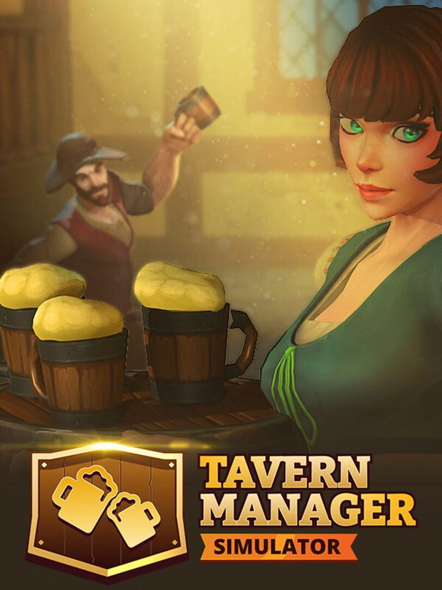

Tavern Manager Simulator
Tavern Manager Simulator
Details
|  | |
| Playtime | 2h 40m 0s |
| Last Activity | 2024-09-08 1:20:37 |
| Added | 2024-09-05 15:55:42 |
| Modified | 2024-09-05 15:55:58 |
| Completion Status | Played |
| Library | Steam |
| Source | Steam |
| Platform | PC (Windows) |
| Release Date | 2024-08-13 |
| Community Score | |
| Critic Score | |
| User Score | |
| Genre | Indie Simulator |
| Developer | One More Time |
| Publisher | One More Time |
| Feature | Single Player |
| Links | Steam Twitch Discord Epic |
| Tag | |
Description

Tavern Manager Simulator is an exciting process of rebuilding, expanding and improving a tavern. Take different approaches to running an establishment and meet the challenges of the outside world to create your own unique story.
Restore the Tavern
Renovate your workspace, buy resources and start serving your customers to earn money for further upgrades and improvements to your place.
Cook Delicious Dishes
Pour beer into large mugs. Throw vegetables into a cauldron, chop and tenderize meat. The more time you spend cooking, the more skillful your dishes will become. Better skills - more tips!
Serve your customers
Fast and quality customer service is the key to your Tavern's prosperity. All customers expect their table to be filled with mugs of beer and appetizers at once, as if by magic.
Become a famous Tavern Master
Order beer and cooking resources in time. Maintain a fire in the work stations. Control the quality of food and drink. Purchase tavern improvements that will make the work more efficient. And the fame of your tavern will spread throughout the kingdom!Features
- Run your abandoned tavern in a fantasy kingdom
- Renovate, improve, expand your establishment
- Pour beer into huge mugs, cook tasty dishes.
- Clean up, wash dishes
- Lots of decorations and furniture to create a unique atmosphere
- Many visitors with different needs and expectations
- Random game events